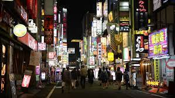

Tokyo was originally a small fishing village, Edo, in what was formerly part of the old Musashi Province. Edo was first fortified by the Edo clan, in the late twelfth century. In 1457, Ōta Dōkan built Edo Castle. In 1590, Tokugawa Ieyasu moved from Mikawa Province (his lifelong base) to the Kantō region. When he became shōgun in 1603, Edo became the center of his ruling. During the subsequent Edo period, Edo grew into one of the largest cities in the world with a population topping one million by the 18th century.[17] But Edo was still the home of the Tokugawa shogunate and not the capital of Japan (the Emperor himself lived in Kyoto from 794 to 1868)
Tokyo has the largest metropolitan economy in the world. According to a study conducted by PricewaterhouseCoopers, the Greater Tokyo Area (Tokyo-Yokohama) of 38 million people had a total GDP of $2 trillion in 2012 (at purchasing power parity), which topped that list.Tokyo is a major international finance center; it houses the headquarters of several of the world's largest investment banks and insurance companies, and serves as a hub for Japan's transportation, publishing, electronics and broadcasting industries.During the centralized growth of Japan's economy following World War II, many large firms moved their headquarters from cities such as Osaka (the historical commercial capital) to Tokyo, in an attempt to take advantage of better access to the government. This trend has begun to slow due to ongoing population growth in Tokyo and the high cost of living there.
As of October 2012, the official intercensal estimate showed 13.506 million people in Tokyo with 9.214 million living within Tokyo's 23 wards.During the daytime, the population swells by over 2.5 million as workers and students commute from adjacent areas. This effect is even more pronounced in the three central wards of Chiyoda, Chūō, and Minato, whose collective population as of the 2005 National Census was 326,000 at night, but 2.4 million during the day.In 1889, the Home Ministry recorded 1,375,937 people in Tokyo City and a total of 1,694,292 people in Tokyo-fu.[89] In the same year, a total of 779 foreign nationals were recorded as residing in Tokyo. The most common nationality was English (209 residents), followed by American nationals (182) and Chinese nationals (137)